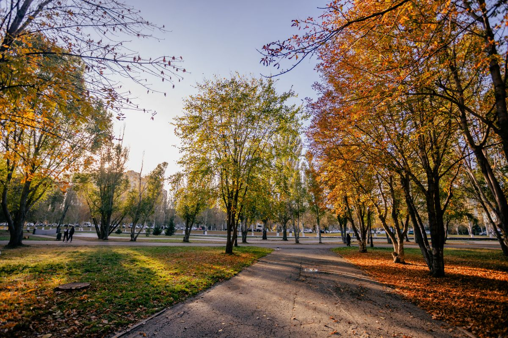

02 / The scenic route
A walk in the park.
A camera in your pocket.
A hundred little things to notice.
A small photo walk
Look a little closer.
Choose something to photograph. Collect three different moments to uncover a note.
0 / 5 photos collected
No rush. The best photos happen when you pause.

Choose a moment to keepA memory collected
You found a pattern.
A path, a pause, a small surprise. The park’s little secret? There’s more to see when you slow down.
Collected along the way
Your pocket gallery.
Click a photo to look again.